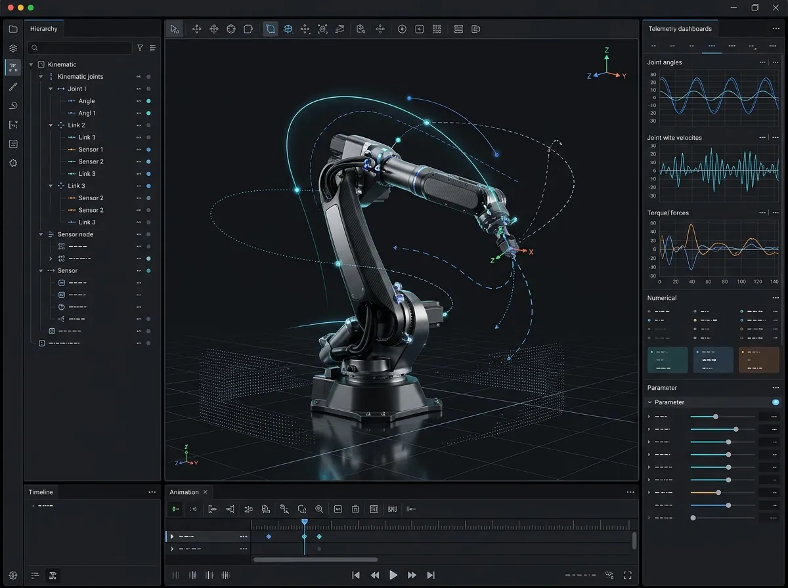

· 03 / 工程与机器人Engineering & Robotics
PiperSim
一台六轴机械臂的四种存在方式：假硬件、物理仿真、真机、以及边控制真机边在仿真里看着它动。 Four ways for one six-axis arm to exist: fake hardware, physics simulation, the real machine, and the real machine with a simulation running alongside it.

背景Background
一台真实的六轴机械臂很难随时上手：真机占地方、动作慢、坏了要等配件。而一旦有了仿真，接口又和真机不一样——规划器说的是同一套关节角，驱动层却一边是话题、一边是 CAN 帧。绝大多数时间被花在这两种"看起来一样、其实不一样"的地方。
A real six-axis arm is hard to work with on demand: it takes up room, it moves slowly, and a broken part means waiting for a replacement. Add simulation and the interfaces stop matching — the planner speaks in joint angles either way, but the driver layer speaks in topics on one side and CAN frames on the other. Most of the time goes into places that look identical but are not.
目标Goal
让同一份配置在 mock / sim / real / twin 四种模式下都能跑起来：换模式的时候，上层的规划代码、启动脚本、甚至 RViz 里的操作方式都不需要改。
Make one configuration run under mock / sim / real / twin: when the mode changes, the planning code, the launch scripts and even the way you operate in RViz should not.
我的贡献My contribution
这个工作区是我自己维护的（Meng-p7/PiperSim）。从零搭起了包的划分与启动编排，把 MoveIt 配置、MuJoCo 后端、SocketCAN 真机接口、Eye-to-Hand 标定与数字孪生放进同一套约定里，并写了让新机器快速上手的诊断脚本。
- 按"谁拥有什么"划分
src/：bringup、control、mujoco、calibration、description 各归其位，外部仓库用 vcstool 引入。 - 写了 MoveIt 配置与 bringup 组合，以及 mock / sim / real / twin 四种模式的启动入口。
- 接入了
mujoco_ros2_control物理后端与 SocketCAN 真机驱动，并实现了两者的状态镜像。 - 实现 Eye-to-Hand 标定：固定外部相机，采样时不让机械臂运动。
- 写了
doctor.sh环境诊断脚本与 Jazzy 容器的迁移配置。
I maintain this workspace myself (Meng-p7/PiperSim). It is where I set out the ownership-based package layout and the launch orchestration, and where MoveIt configuration, the MuJoCo backend, the SocketCAN hardware interface, Eye-to-Hand calibration and the digital twin are brought under one set of conventions — together with the diagnostics that make a new machine usable quickly.
- Split
src/by ownership: bringup, control, mujoco, calibration and description each own their piece, with external repositories imported through vcstool. - Wrote the MoveIt configuration, the bringup composition and the entry points for all four modes.
- Integrated the
mujoco_ros2_controlbackend and the SocketCAN hardware plugin, and mirrored state between them. - Implemented Eye-to-Hand calibration with a fixed external camera, sampling without moving the arm.
- Wrote the
doctor.shenvironment check and the Jazzy container migration config.
技术实现Implementation
用户入口
├── start_sim.sh / start_real.sh
├── start_orbbec_camera.sh
├── scripts/doctor.sh
├── scripts/build_workspace.sh
└── docker/run.sh
│
▼
MoveIt 与启动编排
├── piper_moveit_config
└── piper_bringup
│
▼
ros2_control / 功能后端
├── piper_control SocketCAN 真机接口
├── piper_mujoco MuJoCo 与 Twin 同步
├── piper_calibration Eye-to-Hand 标定与验证
├── piper_description URDF/Xacro、关节与硬件描述
└── OrbbecSDK_ROS2 固定版本的相机驱动子模块
| 模式Mode | 后端Backend | 控制真机Drives hardware | |||
|---|---|---|---|---|---|
| mock | ros2_control 假硬件 | ros2_control fake hardware | 否 | No | |
| sim | mujoco_ros2_control | mujoco_ros2_control | 否 | No | |
| real | Piper SocketCAN 硬件插件 | Piper SocketCAN hardware plugin | 是 | Yes | |
| twin | 真机控制 + MuJoCo Python 镜像 | Real control + MuJoCo Python mirror | 是 | Yes | |
| 标定 | calibration | 真机只读反馈 + Orbbec | Read-only + Orbbec | 采样不运动 | No motion |
需要特别说明的是：Twin 不是只读演示模式。它会启动真机控制器，RViz 里的执行操作会作用到真实机械臂；MuJoCo 只是镜像 /joint_states。这一点在 README 里写得很清楚，因为它最容易被人误用。
One thing worth stating plainly: Twin is not a read-only demo. It starts the real controller — executing in RViz acts on the physical arm, and MuJoCo only mirrors /joint_states. The README says so explicitly, because it is the easiest thing to misuse.
成果Status
到目前为止的状态是"工程就绪"，而不是"硬件验证完成"：核心包已在 Ubuntu 22.04 / ROS 2 Humble 上做过隔离构建；Ubuntu 24.04 / ROS 2 Jazzy 的 Docker 迁移配置已经整理好，但当前开发机既没有 Docker，也没有目标真机，因此 Jazzy 容器、GPU、Orbbec、CAN 与实体机械臂仍然需要按仓库里的 ROADMAP.md 在目标主机上验收。
Where it stands is "engineering ready", not "hardware verified": the core packages have been built in isolation on Ubuntu 22.04 / ROS 2 Humble, and the Ubuntu 24.04 / ROS 2 Jazzy Docker migration config is in place — but this machine has neither Docker nor a target robot, so the Jazzy container, GPU, Orbbec, CAN and the physical arm still have to be accepted on the target host, following the ROADMAP in the repository.
反思Reflection
这个仓库有一条自己给自己定的规矩：不把"配置已实现"写成"硬件已验证"。写 README 的时候最容易犯的错，是把这两件事混在一起说——读者会以为拧一下开关就能在真机上跑，其实中间还差一次验收。我宁可让文档显得保守一点。
下一步是把目标主机上的验收记录补齐（尤其是 Twin 模式在真机运动时的时间对齐），并把 doctor.sh 的检查项扩到 Orbbec 与 CAN 总线这一层。
The repository holds one rule I set for myself: "the configuration is implemented" is never written as "the hardware is verified". The easiest mistake in a README is to blur the two — the reader then assumes a switch needs flipping on the real machine, when an acceptance run still stands in between. I would rather the documentation look conservative.
Next: finish the acceptance record on the target host — especially the timing between the real arm and its mirror in Twin mode — and extend doctor.sh down to the Orbbec camera and the CAN bus.